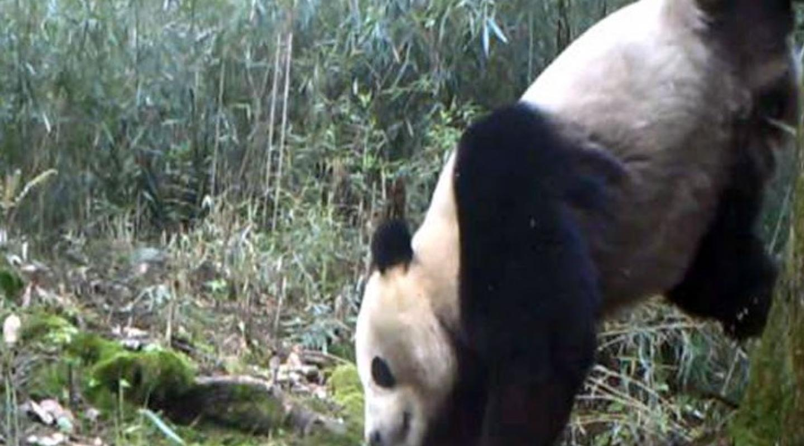

| |
POPULATION.There are about 1,864 of them in the wild. |
 |
PANDAS HAVE EXCELLENT CAMOUFLAGE FOR THEIR HABITAT
The giant panda's distinct black-and-white markings have two functions: camouflage and communication. Most of the panda - its face, neck, belly, rump - is white to help it hide in snowy habitats. The arms and legs are black, helping it to hide in shade. |
|
 |
PANDAS CAN SWIM AND EVEN CLIMB TREES
Giant pandas are good swimmers and excellent tree climbers. At 5 months old, giant panda cubs learn how to climb - sometimes practising by climbing on their mum. |
 |
PANDAS DO OCCASIONALLY EAT SOMETHING OTHER THAN BAMBOO
A pandas diet is 99% vegetarian, which mostly includes bamboo roots, stems, shoots and leaves. However their digestive system is typical of a carnivore, so the remaining 1% of their diet can include eggs, small animals and carrion. Pandas are also known to forage in farmland for pumpkin, kidney beans, wheat and domestic pig food. |